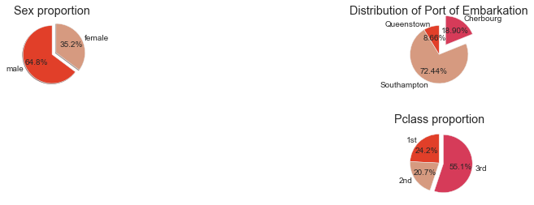
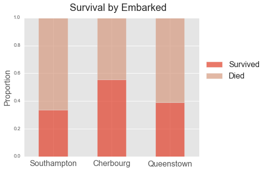

Overview
This week we worked with remote databases, and more advanced topics for conducting logistic regression.
We are going to create, train and evaluate a logistic regression model for disaster analysis using AWS PostgreSQL instance via Python.
In this project, we'll be using data on passengers from the 1912 Titanic disaster stored in a remote PostgreSQL database to create our model. Our purpose is to explain, using regression analysis, the impact of sex, passenger class, and age on a person’s likelihood of surviving the shipwreck.
Problem Statement
A research firm that specializes in emergency management needs to create and train a logistic regression model that can show off the firm's capabilities in disaster analysis. The model will predict WHO IS MOST LIKELY TO SURVIVE when a disaster comes up.
Project Goals
The main goals for this project are:
- Collect your data from an AWS PostgreSQL instance via Python + Jupyter Notebook.
- Perform any necessary data wrangling before building the model
- Create a logistic regression model to figure out the likelihood of a passenger's survival
- Gridsearch optimal parameters for the logistic regression model
- Create a kNN model and optimize its parameters with gridsearch
- Examine and explain the confusion matrices and ROC curves
- Create a report of your findings and detail the accuracy and assumptions of your model
Dataset Background
On April 14, 1912, the unthinkable happened when the “unsinkable” RMS Titanic crashed into an iceberg and sunk into the Atlantic Ocean. The 20 lifeboats aboard the ship, a number actually larger than that required by the British Board of Trade at the time, were not enough to save a majority of the passengers, leaving over 1500 passengers aboard the sinking vessel. A total of 705 passengers escaped onto lifeboats and to safety. But not all passengers had an equal chance of getting onto a lifeboat and surviving the disaster.
Dataset Description
This Titanic dataset describes the survival status of individual passengers on the Titanic. It does not contain information for the crew, but it does contain actual and estimated ages for almost 80% of the passengers.
SIZE:891 Passengers, 12 Variables SOURCES:
VARIABLE DESCRIPTIONS
- PassengerId Body Identification Number
- Survived (0 = No; 1 = Yes)
- Pclass Passenger Class (1 = 1st; 2 = 2nd; 3 = 3rd)
- Name
- Sex
- Age
- SibSp Number of Siblings/Spouses Aboard
- Parch Number of Parents/Children Aboard
- Ticket Ticket Number
- fare Passenger Fare (British pound)
- Cabin cabin’s location
- embarked Port of Embarkation (C = Cherbourg; Q = Queenstown; S = Southampton) Lifeboat
SPECIAL NOTES
- Pclass is a proxy for socio-economic status (SES) 1st ~ Upper; 2nd ~ Middle; 3rd ~ Lower
- Age is in Years; Fractional if Age less than One (1) If the Age is estimated, it is in the form xx.5
- Fare is in Pre-1970 British Pounds ()- Conversion Factors: 1 = 12s = 240d and 1s = 20d
With respect to the family relation variables (i.e. sibsp and parch) some relations were ignored. The following are the definitions used for sibsp and parch.
- Sibling: Brother, Sister, Stepbrother, or Stepsister of Passenger Aboard Titanic
- Spouse: Husband or Wife of Passenger Aboard Titanic (Mistresses and Fiances Ignored)
- Parent: Mother or Father of Passenger Aboard Titanic
- Child: Son, Daughter, Stepson, or Stepdaughter of Passenger Aboard Titanic
Other family relatives excluded from this study include cousins, nephews/nieces, aunts/uncles, and in-laws. Some children travelled only with a nanny, therefore parch=0 for them. As well, some travelled with very close friends or neighbors in a village, however, the definitions do not support such relations.
Data Mining
We replaced the null ages with the median, because 20% of the dataset has null ages. We removed the null records for Embarked, consider them not meaningful
Findings
The Median Ages is 28
The oldest person was 80
The average fare was 34 pounds
 
Risks and Assumptions
Risks:
- I have no information about who created this dataset or where it came from
- The proportion of survival and no survival is slightly different form the real numbers
- For approximately 20% of the passengers, age was missing.
- Only 33 % of the of the passengers have cabin’s location information.
Assumptions:
- This data is 80% reliable and represents the behavior of the population.
Model
We used logistic and KNN models for this prediction of "survival or "no survival" We trained and tested on a hold-out sample (30% of the dataset). Each model used the following features from the data:
dummy variables for Sex, Class, SibSp, and Parch
normalized Age and Fare
The ROC:0.85249383906568088
Results
Correlation of the coeficients
ROC curve For the Logistic Regression model
Comparision of the ROC curve for the logistic regression and Knn models
Confusion Table
Confusion matrix tells us that the model correctly predicted 81 survivors and 165 non-survivors, 17 were predicted to survive actually died(Type 1 error or false positives), while 31 were predicted died and actually survived (type 2 error or false negative).
Classification Report
Logistic Regression Model
Recall is about 0.84. This is the sensitivity or true positive rate (TPR) The model was able to predict 83% of all survived passengers. Precision is about 0.84. This is a measure of TP / (TP + FP). F1 is the harmonic mean of precision and sensitivity, provides and aggregated view of both performance metrics.
Knn Model

Both models performed fairly similarly.
It was a very good experience to use different classifying model in order to tune the model.